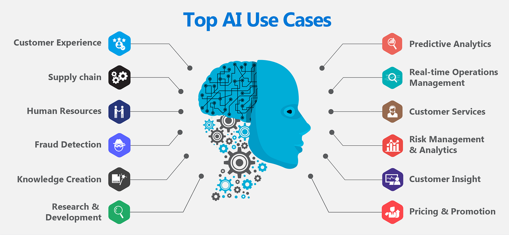
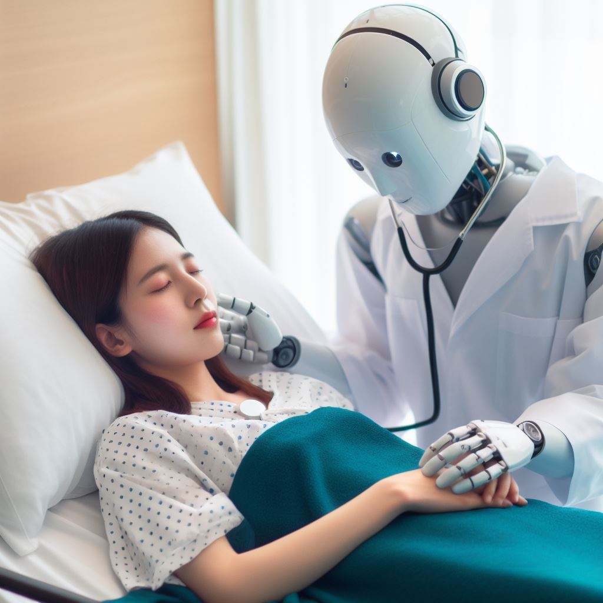

What is AI and how does it work?
Artificial intelligence more commonly known as AI is technology that enables a computer to perform advanced actions such as analyze data, perform specific actions and task, problem solving, learning, reasoning and almost anything else you can think of. They use machine learning and deep learning to train and evolve. There are three kinds of learning models are used in machine learning. Supervised learning which is when the machine maps a specific input to an output using labeled training data. So for example if you wanted it to recognize a dog you would feed it pictures of dogs labeled as dogs.Unsupervised learning is when the machine learns based on unlabeled data and the end result is not known ahead of time. The third type is reinforcement learning which is learning by doing. The machine learns to perform a task by trail and error until it performs in a desirable range. If the machine recieves positive feedback when it does good and negative when it does poorly. Deep learning is more advanced and can process more data and a wider range of data such as images. It requires less human intervention and produces more accurate results. Deep learning uses neural networks that are based on how the human brain works to take in its data and process it.

Specific techniques and models
The three learning models talked about above are more broad descriptions of models. Below we are going to go over a couple of more specific techniques within those models
- Generative Adversarial Networks (GANs):
- Long/short term memory (LSTM):
- Variational Autoencoders (VAEs):
Gans were created in 2014 by Ian Goodfellow and use two neural networks that compete against each other. One network is the generator that creates examples to mimic real data that the other network tries to distinguish between real and generated data. GANs can be used to create images when the generated data is good enough for the network to believe the data is true. They are used in image generation, style transfer, data augmentation and much more.
LSTM are advanced forms of another model known as Recurrent neural networks. Created in 1997 by Sepp Hochreiter and Jürgen Schmidhuber, LSTMs can use memory to remember what has happened in previous layers and things that happened several years ago. They have three gates known as the forget gate which decides what information should be thrown away, input gate which determines what new information should be stored and the output gate which regulates the information it should output. LSTMs are used in speech recognition, natural language processing, time series predictions, anomaly predictions and many other functions.
VAEs are powerful generative models introduced in 2013 by Diederik P. Kingma and Max Welling. They work by encoding data into a latent space that captures the most important features of the data. The VAE then learns and uses probability distribution over the latent space and with that information it can generate new data samples. Becuase what you are getting back is reconstructed data they are trained to minimize reconstruction loss. VAEs can be used for image generation, text generation, music generation, data augmentation and many other things.
How is AI used today
From self driving cars to the smartphone in your pocket AI is used almost everywhere nowadays even when you dont realize it. AI can use your information to create targeted ads and personalized marketing, similary social media apps use AI to recommend new content to you based off of your likes and searches. Many companies offer AI customer assistance now to help you with any questions you may have. Your smartphone has AI voice assistance, facial recognition, smart input keyboards to predict your next word or phrase, smart battery usage to optimize your phones battery based on usage patterns and much more. AI can be used in schools to help students get customized learning and help teachers create, grade and analyze student data. Navigation apps nowadays have the power to tell you if there is heavy traffic and reroute you to get to your destination faster. Your fitness and health can be monitored by smart devices that do things such as track steps, heartrate, calories and sleep patterns then use AI to provide insight on your health and provide reccomendations. There are many more ways but it would take a while to cover them all especially with how fast new AI is constantly comming out currently.
The future of AI
The future of AI looks very promising with its increased interest and rapid development the posibilities are endless being able to benefit everyone.
- Increased productivity and efficiency from AI could lead to people having more time to focus on the things they enjoy more.
- Help with a person's creativity whether it be through art, music, or whatever else the person needs creative help with.
- Personal AI assistants could help with scheduling, tasks, financial management, communication, research, personalized experiences based on what it has learned about you, and anything else you can think of.
- Personalized learning with AI can help all students focus on the problems they are having to get a better understanding and can also open up new ways of learning.
- AI in healthcare can help with diagnostics, treatment, personalized medicine, and maybe even AI-powered robots to perform surgeries.
- If all vehicles on the road were controlled by AI it would likely lower crashes and fatalities by getting rid of drunk drivers, distracted drivers, bad drivers, etc. They can also help with better parking, traffic management, and overall enhanced user experience.
- It could also help solve complex problems, make new discoveries and maybe even AI-controlled robots one day.
The possibilities are truly endless, and it's hard to make an accurate prediction where we will be in the near and far future but hopefully some of these come true
Final Thoughts
I think the rapid development of AI is great and will benefit many people with everday and complex task. Hopefully companies continue to work with AI development and research so some of the ideas talked about in the future of AI become a reality one day. With that being said as AI continues to develop I dont think it means people should rely on it more and get lazier. For example if all cars were self driving people should still know how to drive a car. It also shouldnt be a tool used to get your homework done faster but as a tool to help you learn and get a better understanding. If you rely on it to much in school when you get a real job you may struggle becuase you dont actually know what you are doing. AI is also not perfect and can leave errors or misinterpretate what you want it to do giving you a bad answer. AI can also have bias if not carefully monitored leading to it not telling you the best options posible. Overall the development of AI is good and hopefully stays that way but could lead down some bad paths.